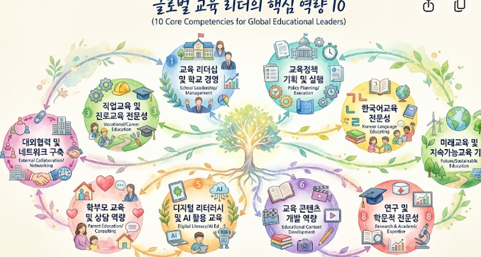

취미 1: [예: 등산과 자연 탐방]
[예: 주말마다 산을 오르며 체력을 다지고 마음을 비워냅니다. 정상에서 바라보는 풍경은 새로운 도전을 시작할 용기를 줍니다.]

풍부한 인생 경험에 첨단 AI 기술을 더해 새로운 미래를 열어가고 있습니다.
반갑습니다! 지나온 삶의 지혜를 자산 삼아, 멈추지 않고 성장하는 50대 [이름]입니다.
변화하는 세상에 발맞추어 항상 배우고 질문하는 삶을 지향합니다.
현재 수강 중인 수업: AI 에이전트 마스터 과정
"기술의 발전은 나이와 상관없이 누구에게나 열려 있는 기회라고 생각합니다.
단순히 AI를 사용하는 소비자에 머무르지 않고, 제 삶과 업무 경험에 AI를 융합하여 문제를 해결하는 'AI 에이전트 마스터'로 거듭나겠습니다.
지치지 않는 열정으로 끝까지 완주하여, 동료들에게도 긍정적인 자극이 되는 멋진 러닝메이트가 되겠습니다!"
바쁜 일상 속에서 저에게 쉼과 에너지를 주는 두 가지 취미입니다.
[예: 주말마다 산을 오르며 체력을 다지고 마음을 비워냅니다. 정상에서 바라보는 풍경은 새로운 도전을 시작할 용기를 줍니다.]

[예: 세상의 따뜻한 순간들을 카메라에 담는 것을 좋아합니다. 렌즈를 통해 일상을 관찰하면 평범한 것도 특별해집니다.]